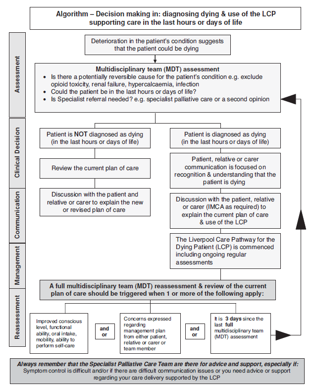

End of life issues. Euthanasia and assisted suicide
Death is inevitable, but this is not always a comfortable truth for society, patients, or the medical profession. It is part of our duty as doctors to care for patients along their whole life’s journey and we must maintain the same standards of care at the end, as at the beginning. We must act with integrity and honesty and not shy away from difficult issues. We must strive to ensure that all of the patient’s needs are addressed (psychological and spiritual as well as physical) in order that they might die at peace and with dignity
Defining ‘end of life’
Patients are approaching the end of life when they are likely to die within the next 12 months. This includes those patients whose death is expected within hours or days; those who have advanced, progressive incurable conditions; those with general frailty and co-existing conditions that mean they are expected to die within 12 months; those at risk of dying from a sudden acute crisis in an existing condition; and those with life-threatening acute conditions caused by sudden catastrophic events.
The term ‘approaching the end of life’ can also apply to extremely premature neonates whose prospects for survival are known to be very poor, and patients who are diagnosed as being in a persistent vegetative state (PVS) for whom a decision to withdraw treatment and care may lead to their death.
Diagnosing the dying patient and preparing for death
Patients should be diagnosed as early as possible. In some cases, recognising that a patient has a limited life expectancy may occur 12 months or so in advance of death. One of the tools that has been developed to identify such patients, and provide care for them in their last year, is the Gold Standards Framework. Originally developed in 2000 in England by the Department of Health End of Life Programme for use in a primary care setting, it was subsequently extended to other parts of the UK and to other care settings. Its main aims are to identify patients who will need palliative or supportive care, assess their needs, preferences and issues important to them and plan around those needs and preferences. It seeks to develop guidance that clinicians are able to recognise when a patient is dying, particularly when the individual enters the last hours or days of life.
The diagnosis of dying is often complex, irrespective of previous diagnosis or history. Uncertainty is frequently an integral part of the process and there are occasions when a patient who was thought to be dying lives longer than expected and vice versa. In 2009, for example, an analysis of over 4,500 hospital deaths indicated that health professionals were sometimes unable to judge that patients were dying. This led to inadequate implementation of appropriate care and poor communication with patients, relatives and in health teams. Even when it was clearly recognised on admission that some patients could not survive long, discussion that should have taken place about treatment limitation did not occur. When dying patients are correctly assessed, practical planning tools help to manage their current symptoms and anticipate others likely to occur. They help health professionals assess what medication may be needed to maintain symptom control and whether consideration should be given to withdrawing medication that is no longer achieving its therapeutic aim. These pathways require regular and frequent review of the patient’s condition by the healthcare team so that drug doses can be tailored to match the individual patient’s needs. The use of pathways in the final days of life appears more evident with adult rather than paediatric patients, for whom the range of life-limiting conditions is very broad.
General principles
- It is important to recognise when death is approaching and to help people to prepare for it;
- Compassion and sensitivity are particularly important but honest communication is essential, while recognising that people’s desire for information can vary at different stages of their illness;
- Effective communication within the health team is vital so that mixed messages are avoided;
- Patients must be afforded dignity and privacy;
- Patients should have opportunities to maintain control over as many aspects of their care as possible, including by advance planning if they wish;
- Health professionals should be sensitive to patients’ cultural and religious backgrounds;
- Care provided to dying patients includes helping people close to them to come to terms with the situation and to cope with their bereavement
Communication when patients are approaching death
For some death comes quickly and unexpectedly but for many patients there is a period of time when it is clear that death is approaching. This should be identified as early as possible (ideally, when death is likely to occur within 12 months) so that discussion and planning with the patient can take place, without urgency. It is a time for helping patients and families to come to terms with the situation. Within palliative care services, considerable attention has been given to developing good communication strategies to handle difficult situations openly, such as when patients ask for details about how their death will occur, and to the use of verbal and non-verbal skills to facilitate discussion
Patients with capacity
When making decisions about ongoing treatment and resuscitation with someone who has capacity, the doctor’s duty is to explain to the patient their options in a clear and honest manner. The doctor may advise, but must not put undue pressure on a patient to pursue a particular course of action. A patient with capacity might make decisions about there care that seem unwise to the medical team, for example, he might refuse surgery for a curable cancer. If a decision seems bizarre, it is acceptable to explore sensitively the reasoning behind it; however, the patient retains the right to control what happens to his body, and his decisions must be respected and acted upon, even if they are not rational or understood. Although adults with capacity may refuse treatment, no patient may demand treatment that the doctor does not deem to be in his best interests.
Patients lacking capacity
Before losing capacity, a patient may entrust to another who is then authorized to make decisions on their behalf when capacity is diminished. the attorney must have been granted specifically the power to make medical decisions. The attorney must make decisions in the patient’s best interests and not simply make substituted judgements. Efforts should also be made to discover if the patient has made any advance decisions about their end of life care. These decisions may be recorded in legally drawn up documents or take the form of conversations recorded in the hospital notes. It is good practice to get the patient to countersign the transcript of any conversation where significant decisions are made during an admission. As stated previously, advance requests for treatment are not legally binding, although they help gain an insight into the patient’s wishes and so will be given weight when deciding how to proceed in their best interests. In some countries a valid advance refusal of treatment is legally binding and must be respected.
The patient who ‘doesn’t want to know’
If a patient does not wish to know the facts surrounding their illness or condition, sensitive attempts should be made to find out why. the patient’s worries should be addressed but if all attempts to help them engage in conversation fail, their wishes must be respected. No one else may give consent to treatment or investigation on their behalf while they retain capacity, even at the patient’s request. for consent to be legally valid, it must be ‘informed’, and so this leaves the medical team in a difficult position should they wish to proceed to investigation and treatment as, technically, they are committing assault because the patient’s consent is not truly valid. this dilemma should be explained to the patient. Most doctors would agree that they would proceed, pragmatically. Without bullying or coercion, the patient’s decision to remain ignorant should be revisited regularly. All discussion should be recorded in the notes.
Discussions with family members
Families often have complicated dynamics. If a patient has capacity, they must give their permission before information about them can be discussed with anyone else. In the case of those who lack capacity, it is reasonable to assume that they would want those closest to them to be kept informed of their condition.
Communicating with complementary therapists
Some disciplines, such as osteopathy and chiropractic, are professionally regulated and so health professionals can liaise with such practitioners with confidence that they are competent in the therapies they provide and are legally accountable for them. Others, such as herbal medicine and homeopathy are not regulated in the same way, but claim to provide diagnosis and treatment. Doctors may be worried if patients choose these and decline treatments for which there is evidence of benefit. In such cases, they need to talk to the patient about their concerns, while recognising that ultimately patients can choose whichever therapy they want Among the therapies that are often used by patients to supplement conventional medicine but which do not claim to have any diagnostic purpose are aromatherapy, massage, stress therapy, reflexology and hypnotherapy. Practitioners of these therapies can provide supportive care without impeding conventional treatment. Some other alternative disciplines which do not impede conventional care are perceived as lacking any credible evidence base, such as crystal therapy and iridology. Among the complementary disciplines that claim to provide diagnoses and treatment are Ayurvedic medicine and traditional Chinese medicine. Patients may derive a sense of reassurance that they are trying all options if they embark on such alternative solutions. Dilemmas arise for the healthcare team if patients appear to be pursuing unproven therapies that are potentially harmful or which they cannot afford. It can also be problematic if unregulated practitioners request medical tests or results from the healthcare team. Generally, doctors would need to be convinced that such interventions are necessary in the patient’s interests before providing them.
Advance care planning
Making decisions in advance about future treatment is something that in some countries patients can choose to do at any stage of life, particularly if they have reason to fear a future loss of mental capacity. A valid competent advance decision refusing some or all medical treatment (a ‘living will’) is likely to be binding on health professionals.
Advance care planning is defined as: ’a process of discussion between an individual and their care providers irrespective of discipline. If the individual wishes, their family and friends may be included. With the individual’s agreement, discussion should be:
- documented;
- regularly reviewed;
- communicated to key people involved in his or her care.
Examples of what might be included are the individual’s:
- concerns
- values or personal care goals
- understanding about his or her illness and prognosis and particular preferences for types of care or treatment that may be beneficial in the future.’
Palliative care
Palliative care is defined as ‘an approach that improves the quality of life of patients and their families facing the problems associated with life-threatening illness, through the prevention and treatment of pain and other problems, physical, psychosocial and spiritual’. When patients approach the end of life, palliative care brings together various forms of care to help them to live out their remaining days to the fullest extent and to prepare themselves for death. The principles underpinning it include the following:
- focus on quality of life, including good symptom control;
- A whole person approach, taking account of the person’s life experience and current situation;
- care encompassing both the patient and the people close to the patient;
- respect for patient autonomy and choice;
- emphasis on open and sensitive communication with patients, informal carers and professional colleagues.
Clinically, the focus is on keeping the person comfortable and free from distressing symptoms. Although opinions differ as to what a good death involves, most agree it is one in which pain and distress are well managed, the dying person and the relatives feel supported rather than abandoned, and a sense of closure is achieved. In adults, palliative care has been particularly associated with cancer care at the end of life but is not restricted to either cancer or terminal care. It can provide supportive care for patients with other advanced progressive illnesses, such as cardiac, respiratory and neurological conditions. It focuses on maximising the patient’s quality of life at all times within the parameters set by the disease, when cure or even effective disease control are not possible.
Quality markers
Quality markers aim to ensure that the same standards of care are offered. They centre on the need for good organisational planning, identifying early people who are approaching the end of life, consulting them about their wishes, having services continuously available day and night, ensuring that the workforce is trained in end of life care and monitoring and auditing the quality of that care. Ways of measuring whether patient choice works in practice include defined outcome measures, such as whether patients can be given a choice about place of death. Care standards are also measured through patient, carer and family feedback, such as by a patient or carer diary which can be more informative than questionnaires. Diaries of patients’ experiences can be compared and analysed to inform service improvements and may be less of an imposition than asking people to complete repeated questionnaires.
The Liverpool Care Pathway for the Dying Patient
When patients are recognised as dying, their treatment needs to be continually monitored and assessed. The best known tool to manage the care of dying adults is the Liverpool Care Pathway for the Dying Patient (LCP). The LCP was developed in the late 1990s and has been continuously updated. In 2004, it was highlighted as an example of best practice. LCP generic version helps health professionals to focus on care in the last hours or days of a patient’s life, ensuring that high quality care is tailored to individuals’ needs when their death is expected. As with all other clinical guidelines, the LCP does not replace clinical judgement. Using it requires regular assessment, reflection, critical senior decision making and clinical skill. Changes in care at this complex, uncertain time need to be reviewed regularly by the multi-disciplinary team so that decisions are made in the best interests of patients with input from their family or carers. The LCP does not preclude the use of clinically assisted nutrition or hydration or antibiotics; all such decisions should reflect an assessment of the patient’s best interests. The responsibility for the use of the LCP generic document as part of a continuous quality improvement programme sits within the governance of an organisation and must be underpinned by an education and training programme. The main goals of the LCP are given below
- Goal 1.1 The patient is able to take a full and active part in communication
- Goal 1.2 The relative or carer is able to take a full and active part in communication
- Goal 1.3 The patient is aware that they are dying
- Goal 1.4 The relative or carer is aware that the patient is dying
- Goal 1.5 The clinical team have up-to-date contact information for the relative or carer as documented below
- Goal 2 The relative or carer has had a full explanation of the facilities available to them and a facilities leaflet has been given
- Goal 3.1 The patient is given the opportunity to discuss what is important to them at this time (e.g. their wishes, feelings, faith, beliefs, values)
- Goal 3.2 The relative or carer is given the opportunity to discuss what is important to them at this time (e.g. their wishes, feelings, faith, beliefs, values)
- Goal 4.1 The patient has medication prescribed on a prn (if needed) basis for all of the following five symptoms which may develop in the last hours or days of life:
- pain
- agitation
- respiratory tract secretions
- nausea/vomiting
- dyspnoea.
- Goal 4.2 Equipment is available for the patient to support a continuous subcutaneous infusion (CSCI) of medication where required
- Goal 5.1 The patient’s need for current interventions has been reviewed by the multidisciplinary team
- routine blood tests
- intravenous antibiotics
- blood glucose monitoring
- recording of routine vital signs
- oxygen therapy
- Goal 5.2 The patient has a ‘do not attempt cardio-pulmonary resuscitation order’ in place
- Goal 5.3 Implantable cardioverter defibrillator is deactivated
- Goal 6 The need for clinically assisted (artificial) nutrition is reviewed by the multidisciplinary team
- Goal 7 The need for clinically assisted (artificial) hydration is reviewed by the multidisciplinary team
- Goal 8 The patient’s skin integrity is assessed
- Goal 9.1 A full explanation of the current plan of care (LCP) is given to the patient
- Goal 9.2 A full explanation of the current plan of care (LCP) is given to the relative or carer
- Goal 9.3 The LCP Coping with dying leaflet or equivalent is given to the relative or carer
- Goal 9.4 The patient’s primary health care team/GP practice is notified that the patient is dying

Pain and symptom relief
When patients’ condition is incurable, the goal of care shifts to maintaining their quality of life, by controlling pain and distressing symptoms. Recognition of the change in focus, by patients, relatives and staff, facilitates discussion about the management of death and bereavement. Some patients put the phase of struggling behind them and come to a degree of acceptance.
Use of opioids and sedatives
The principle of double effect
The principle of ‘double effect’ allows doctors to provide medical treatment that has both bad and good effects, as long as the intention is to provide an overall good effect. They can give sedatives and analgesics with the intention of, and in proportion to, the relief of suffering, even if as a consequence the patient’s life risks being shortened. The moral distinction is between intending and foreseeing the harm. The intention of giving the drugs is to relieve pain and distress; the harmful, but unintended, effect is the risk of shortening life, which the doctor may foresee but not intend.
Pain-relieving drugs, such as morphine, do not necessarily hasten death but a common example of double effect is using morphine when it might do so. The administration of drugs which might hasten death is lawful and ethical when patients are terminally ill or dying, the drugs are in their best interests and the doctor’s motive is the relief of suffering, not causing death. The actual treatment and dosage must be recognised as reasonable and proper within the profession. Although the ethical and legal situation is clear, some doctors remain anxious about the degree of pain relief they can provide. They might be reluctant to increase a drug dosage to cope with patient’s intractable pain or distress, in which case they need to take specialist advice. Some patients have been fearful that their mental distress or sense of panic, as well as physical symptoms, would not be adequately managed at the end of life.
Sedation at the end of life
Alleviating suffering is a very high priority in end of life care but intentionally reducing patients’ awareness, even with their consent, is a serious matter requiring careful examination of doctors’ motives and the availability of possible alternatives. Clearly, sedation can never be a substitute for personalised assessment and treatment of patients’ physical symptoms and their psychological distress. Some people experience severe symptoms in the final days of life, either due to the terminal illness or to coexisting pathologies. Specialist palliative care teams help patients with previously intractable pain, delirium, anxiety or dyspnoea to become comfortable and, in the majority of cases, symptom control can be achieved. In some cases, medication is given with the intention of relieving pain or agitation with the knowledge that one of the side effects is temporary sedation. Because the aim is to relieve patients’ distress, often this does not mean reducing their consciousness to a level where all communication with them is impossible. Various terms are used in the international literature to describe a deep level of sedation, including ‘end of life sedation’, ‘total sedation’, ‘controlled sedation’, ‘sedation for intractable distress in the imminently dying’. Although there has been much debate on the subject, lack of common definitions has made it difficult to evaluate how much or how little, sedation is used and in what circumstances.
Spiritual and pastoral care
One facet of ‘whole person’ care is offering the opportunity to receive spiritual or psychological support. For many patients, the spiritual dimension is immensely important, and particularly so at the end of life. This is not restricted to people who have a particular philosophy, world view or religious belief; many who have none of these things would like support to help them think about the values that have been important to them. A range of advisers may be helpful, including humanist counsellors, as well as hospital chaplains, rabbis, imams or other faith-based spiritual advisers. In a multifaith, multi-cultural society, it is important that professionals providing care and support to people nearing the end of life take account of individuals’ varying spiritual needs. Ideally, these should be assessed before people reach the terminal or dying phase of illness. This gives them time to explore issues that may be troubling them before they reach the very end of life. When patients wish to talk to a hospital chaplain or other religious or spiritual adviser, every effort should be made to accommodate this but confidential information about patients should not be given to spiritual advisers by health professionals, without prior patient consent. Alternatively, the dying person may indicate a desire to discuss personal, moral or spiritual problems with health professionals.
Palliative care for children and young people
Palliative care for children and young people with life-limiting conditions is defined as an active and total approach to care, embracing physical, emotional, social and spiritual elements. It focuses on enhancement of quality of life for the child and support for the family and includes the management of distressing symptoms, provision of respite and care through death and bereavement. It centres on ‘the need to maintain quality of life, not just in the dying stages, but also in the weeks, months and years before death and is characterised by concern for symptom relief, promotion of general well-being and psychological and social comfort for the child and family’. Such care involves an active approach to the management of the child’s symptoms and the provision of psychological, emotional and social support which ideally begins long before the dying stage. It requires the provision of flexible respite care and support for the family and siblings, throughout the illness, death and bereavement. Children and young people often have complex, long-term conditions that require more specialist care and higher levels of home and community support than adults. Care also needs to take account of the child’s or young person’s emotional and cognitive development. Educational needs and the provision of play therapies may have to be planned. The continuing physical, emotional and cognitive development of children also influences all aspects of their care. The transition between active treatment and palliative care is often less clear for children than for adults, particularly when children have genetic disorders with different clinical manifestations to those encountered in other life-threatening conditions. Many professional and voluntary agencies are involved in different aspects of the care of a seriously ill child and the family.
Bereavement support for those close to the patient
Arrangements may need to be made to provide support, including emotional and practical bereavement support, to the family. Good communication and team care should ideally have been initiated at an early stage and this may help to ease the pain of bereavement. Although expected deaths do not represent a shock to the staff who have been caring for the patient, the death of a loved one, however expected, is often a shock for friends and family. Much preparatory work falls to the nursing staff or to GPs. After the patient has died, it is usual and comforting to see death as a release for the patient, but a sense of guilt and fear of criticism often prevent people from also admitting beforehand that the death of the patient may represent a relief for them. The family should be encouraged to discuss any concerns and, if appropriate, should be offered counselling. For parents, the death of a child is the most devastating experience they can have. Hospitals should have appropriate policies in place so that staff are aware of the needs of different cultures at this time and so that the family can be given information, if relevant, about asking for a post-mortem examination or donating tissue or organs.
Euthanasia and physician assisted suicide
General principles
- Doctors should act within the law to help patients to achieve a good death;
- Patients should be able to control the dying process as much as possible and doctors need to listen to patients’ views;
- Patient autonomy is an important principle but does not override other principles. A balance is essential;
- Individuals’ personal choices should not be allowed to harm others;
- Intentionally causing premature death is prohibited and, does not fit with the ethics of medicine;
- Withdrawing or withholding treatment differs fundamentally from intentionally ending life;
Terms and definitions
Assisted dying is an overarching term to describe measures intentionally designed to terminate a person’s life. It is normally applied to patients who voluntarily seek to end heir lives and who have a terminal or degenerative condition. It includes euthanasia and physician assisted suicide but does not cover non-treatment decisions.
Euthanasia literally means a gentle or easy death. It is sometimes called ‘mercy killing’. It describes deliberate steps by someone – usually a health professional – to end a patient’s life.
-Withholding or withdrawing life-prolonging treatment is fundamentally different from assisted dying. Doctors must withhold or withdraw treatment when a patient with capacity refuses it or when a patient who lacks capacity has made a valid advance decision to refuse it. Nor can doctors give treatment that is futile in that it cannot achieve its aim or cannot provide a ‘benefit’ to the patient
- Slippery slope is the metaphor often invoked in debates about assisted dying to describe situations in which one action might possibly be seen as permissible but would lead to undesirable consequences. Once an accepted boundary is breached, the argument goes, there will be no way of preventing a slide down the slippery slope to the breaching of other standards.
Types of euthanasia
There are several types of ‘euthanasia’ discussed in the literature:
Active euthanasia: a positive act is performed, designed to bring about the death of a person who is suffering (e.g. a lethal injection).
Passive euthanasia: no definitive act is performed, but treatment is withheld or withdrawn from the suffering patient with the intention that this will hasten their death.
Euthanasia is voluntary when the sufferer has requested that their life is ended.
Euthanasia is non-voluntary when the patient is unable or incompetent to request their life to be ended. Instead, a proxy, who considers death to be in their best interests, makes the decision for them.
Euthanasia is involuntary when a patient does not want their life to be ended, but their wishes are disregarded. this term is rather an oxymoron; murder might be more accurate
Assisted suicide
In physician-assisted suicide, the physician prescribes or provides a drug to another competent person, at that person’s explicit demand, and is aware that the person will use the drug to end his or her own life. Euthanasia has been legalized in the Netherlands, Belgium, Columbia, and Canada. Physician-assisted suicide, which does not include euthanasia, is allowed in Switzerland and in some states of the USA .
Moral, legal and pragmatic arguments
Arguments in support of assisted dying
Arguments for assisted dying are rights based, consequentialist and deontological. In terms of rights and consequences, assisted dying would allow some patients to achieve their aim of controlling their death and avoiding a situation which they fear will involve suffering or indignity. The main argument in favour of assisted dying focuses on this concept of patients’ rights to choose.
- In terms of deontology, doctors have duties to respect patient choice and minimise suffering. They have special duties to their patients and cannot abandon patients who have unbearable pain.
- Human rights also provide a similar focus on individual entitlements.
- Quality of life is often portrayed as being more important than the patient’s length of life and issues around sanctity of life.
- Opinion polls appear to show that the public support assisted dying being available in some cases.
- Both sides of the argument raise questions about the kind of society we want and whether respect for choices and compassion for suffering should overrule other considerations
Arguments opposing assisted dying
Arguments against assisted dying are also consequentialist and deontological. The consequentialist argument is that permitting assisted dying for some would put large numbers of other people at risk of harm.
- The deontological argument is that this would be contrary to the ethics of clinical practice. The purpose of medicine is perceived as being to improve patients’ quality of life and the opposite of trying to foreshorten it.
- The issue of sanctity of life is sometimes raised as a cogent reason against assisted dying (although many opponents of assisted dying do not subscribe to the notion that life must be preserved at all costs, regardless of its quality).
- It would weaken society’s prohibition on killing and undermine the safeguards against non-voluntary euthanasia. Society would embark on a ‘slippery slope’ with undesirable consequences.
- Effective and high quality palliative care can effectively alleviate distressing symptoms associated with the dying process and allay patients’ fears.
- Only a minority of people want to end their lives. The rules for the majority should not be changed to accommodate a small group.
- Both sides of the argument raise questions about the kind of society we want and whether concern for the vulnerable and respect for life should count for more than individual autonomy.
Case studies
Case 1
60-year-old man with diabetes and hypertension develops renal insufficiency to the point of needing dialysis. He is equivocal about spending the rest of his life on dialysis, but he agrees to start. The patient is not depressed and is fully alert. Six months after starting dialysis, he comes to realize very clearly that he absolutely does not wish to continue. You have no doubt that the patient has full capacity to understand the implications of this decision. What should you do?
Case 2
an elderly man with COPD progresses to the point of needing mechanical ventilation on a chronic basis. He tells you, after long consideration, that he just does not want to live on a ventilator. What should you tell him?
Case 3
a 42-year-old man sustains a cervical spine injury at C1 and C2 leaving him paralyzed from the neck down and ventilator dependent. He is very upbeat and cheerful. He says he will get better and wants to be maintained permanently on the ventilator. You clearly inform him that he is wrong and he will never improve. He says he wants the ventilator forever, or until he is cured. What do you tell him?
Case 4
A woman with aplastic anemia becomes transfusion dependent. After a few months she becomes tired of it and refuses all subsequent transfusions. She has the capacity to understand that she will die without the transfusion, although she is not suicidal. What do you tell her?
Case 5
A 75-year-old man arrives at the emergency department febrile, short of breath, and confused. Many family members accompany the patient,including his wife, his siblings, his children, and his grandchildren. The physicianwants to perform an emergency lumbar puncture, which the patient’s wife andsiblings are refusing. His 25-year-old granddaughter walks up with a health-careproxy form signed by the patient designating her as the proxy. She insists that youdo the lumbar puncture stating that was her understanding of the patient’s wishes.The rest of the family, including the wife, refuses the lumbar puncture stating thatthey know the patient’s wishes better. What do you do?
Case 6
A 78-year-old woman is admitted with metastatic cancer leading to a change in mental status secondary to hypercalcemia. She has a living will in her record that states, “In the event that I become unable to speak for myself for any reason I wish to express my wish that I not be intubated or placed on a ventilator under any circumstances. I also do not wish to receive dialysis. Blood testing and antibiotics are acceptable.” What should you do?
Case 7
A 64-year-old man suffers a severe intracranial bleed leaving him comatose and paralyzed. His wife, sister, and four children are in the hospital. They come to see you because they are unanimously asking that you remove the endotracheal tube and leave the patient to die. The patient repeatedly made this wish known to his family. What should you do?
Case 8
A 78-year-old woman has been admitted to a nursing home with advanced dementia. She has difficulty maintaining oral intake sufficient to survive. The nursing home wants to place a nasogastric tube for feeding. The husband and the son expressly state that the patient said she “never wanted to be maintained like a vegetable” and “I don’t want to be put on a ventilator or have a feeding tube down my throat.” What should you do?
Case 9
a 42-year-old HIV-positive man is admitted for hematuria that is most likely from kidney cancer. He is DNR. Urology is consulted and they think a kidney biopsy is in order as well as a possible nephrectomy, however, they do not want to do either one because the “patient is DNR and therefore preterminal.” What should you tell them?
Case 10
A 47-year-old theoretical physicist with amyotrophic lateral sclerosis has become progressively more disabled to the point of being virtually immobile in a wheelchair. He is unable to work in a meaningful way. He has pulled out the gastric feeding tube and refuses to allow its reinsertion. His wife, who is also his nurse, is insisting that you reinsert it. What should you tell her?
Case 11
A 57-year-old woman with cryptogenic cirrhosis is under your care. She is septic and has severe variceal bleeding as well as encephalopathy not responding to lactulose. She is hypotensive and on pressors as well as intubated from respiratory failure and you expect her to die from her liver disease in the next few days. She develops Hepatorenal syndrome and has developed uremia. The family is requesting placement of a fistula for dialysis. What should you tell them?
Case 12
A man is arrested for armed robbery in which he assaults another man. The victim has sustained cerebral herniation and has lost all spontaneous respirations, cognitive function, and brainstem reflexes. You are called as an expert witness to advise the court. The alleged assailant’s defense lawyer tells the judge that the charge on his client should only be assault and battery, not murder, because the patient’s heart is still beating. The defense lawyer contends that the victim can be alive for many years in this condition. The maximum penalty in some states for murder is life imprisonment or execution. The penalty for assault may be only 10 to 20 years in prison. What should you tell the judge?
Case 13
Tony, a 79-year-old man with a history of hypertension and type 2 diabetes, collapses while playing golf and is taken to the local Accident and Emergency department, still unconscious. A computed tomography (CT) scan reveals a large haemorrhagic stroke and he is transferred to the neurosurgical unit. He fails to regain consciousness, although he does not require ventilatory support. He receives fluids and parenteral nutrition for 11 days and is regularly visited by his wife and two children. Eventually, senior medical staff discuss with Tony’s family the extensive nature of damage to his brain and the likelihood that he will never regain consciousness. The family is asked to consider the possibility of withdrawing nutritional and fluid support and allowing Tony to die ‘naturally’. They are warned that this may take some time, as much as a couple of weeks, but that Tony will not be in any pain. His son approaches you, during visiting hours and tells you that it is becoming increasingly distressing for his mother to watch her husband die and that, if this is to be the inevitable result, why is it not possible to offer a quicker end to the family’s suffering, such as an injection which would stop Tony’s heart.
Questions
- What does an ‘act’ and an ‘omission’ mean in relation to end-of-life decisions?
- What are the ethical arguments for and against the distinction between the two?
- What is the legal position regarding acts and omissions?
Case 14
Nora is 62 years old and has had multiple sclerosis for 25 years. Initially the disease followed a relapsing and remitting course, and Nora would have long periods of good health in between months of various disabling side effects, such as temporary paralysis and visual problems. For the past 10 years, however, her condition has become more disabling and Nora has had to move into a nursing home. The staff are friendly and she is well cared for. As a result of the insidious effect of her illness, most of her bodily functions have ceased to work and she is doubly incontinent. On the days when she is well enough to be aware of her surroundings she finds her condition extremely distressing. She is embarrassed by her lack of bodily control and the fact that she has to have 24-hour nursing care. Her swallowing is unsafe and, following an admission with aspiration pneumonia a year ago, the decision was made to insert a percutaneous endoscopic gastrostomy (PEG) to provide all the nutrition she requires. She now does not even get pleasure from eating or drinking. Some days she is described by staff as being barely conscious, but when she is, they are concerned that she is lonely as she rarely gets visitors.
Questions
- Does respect for the principle of sanctity of life require that life-prolonging treatment should always be provided, irrespective of the quality of that life?
- From whose perspective is quality of life to be judged?
Case 15
Bertie is an elderly man receiving inpatient care following deterioration at home. He has advanced dementia and prostate cancer that has spread to his bones. He has been lovingly cared for by his wife and children throughout his illness, but they are all aware that he is now dying. It has been many months since Bertie has been able to speak or leave his bed, and he no longer appears to recognise his family. While Bertie would previously chew and swallow food placed in his mouth, over the last few days he no longer does this and has coughed and choked on several occasions when given water to drink. The clinical team has explained that Bertie is dying and that he is likely to die within days. His family has understood the explanation from the speech and language therapist that Bertie is unable to swallow safely, and even though the clinical team would support the family with risk feeding, the family does not wish to cause any coughing or choking. Risk feeding acknowledges that there is a risk of choking and food or drink going into the lungs of a patient unable to swallow safely. This risk may be seen as acceptable if withholding food or drink is felt to be inappropriate, for instance if the patient is in the last days of life. Instead, Bertie’s family has asked the clinical team to place a feeding tube, so that their father ‘doesn’t starve to death’. They accept that he is likely to die in the next few days from his underlying medical issues.
Questions
- What is the difference between medical treatment and basic medical care?
- Can clinically assisted nutrition and hydration legally be withdrawn?
Case 16
Mrs Hauser is a 48-year-old woman with metastatic breast cancer that has spread to her brain, despite numerous treatments over years. She is currently an inpatient at a private hospital, having rapidly deteriorated over the last few weeks. She is now bedbound, requires a feeding tube as she can no longer swallow safely and is finding it difficult to communicate, although she can understand information given to her and clearly indicate her wishes. Mrs Hauser is receiving high-energy nutritional supplements down her feeding tube at her request, even though her body is no longer able to gain energy or nutrition from them due to her advanced disease. She is likely to die within the next few weeks. Mrs Hauser is supported by her husband and three teenage children. The entire family has actively and aggressively pursued all treatment options, switching oncologists to gain access to experimental treatments, some of which are not routinely available in Britain. Mrs Hauser has repeatedly requested all possible interventions and treatments. Driven not just by a desire to keep living, she has expressed a strong need to prove to her children that she will never give up fighting the cancer, equating giving up with abandoning her family. Mrs Hauser has regularly declined offers of psychological support. She has previously given fully informed consent to risky treatments which did not have a strong body of evidence that they would provide a benefit and accepted significant side effects throughout her treatments. Mrs Hauser had been scheduled for her next chemotherapy in one week’s time and both she and her husband are insistent it goes ahead, despite the most recent deterioration. The oncologist thinks it unlikely that the chemotherapy will provide any benefit, although he cannot categorically say it will not keep Mrs Hauser alive for extra hours or days. He is aware she had severe nausea the last time she had this chemotherapy and there is a risk it could actually make her more unwell and hasten her death, as it can be damaging to the liver.
Questions
- Is this ‘futile’ treatment?
- Is it legal or ethical to provide or even offer treatment, purely for psychological benefit, rather than physical benefit?
- Is there a difference between giving the high-energy supplements and the chemotherapy if both are purely for psychological benefit?
Case 17
A palliative care consultant Zayn has been asked by a clinical colleague to speak to a woman in her 60s. Sally has a progressive neurological condition and she now has limited verbal communication, worsening mobility and some elements of dementia. Her life expectancy is around 4 years. Sally is frustrated by her condition and the prospect of her future deteriorating health and reliance on her husband. She says to Zayn that she has been in contact with Dignitas in Switzerland and intends to go there for assisted suicide. Her husband and two adult children oppose this but are prepared to go with her if there is no way of changing her mind. Sally has rejected all other forms of counselling and Zayn feels that he should not abandon Sally but rather provide a sounding board for her thoughts and offer support for her family.
Questions
- What support can Zayn offer Sally?
- Are Sally’s children at risk of prosecution if they take Sally to Dignitas for assisted suicide?
- Should assisted suicide be lawful?
Case 18
Petra has multiple sclerosis and has struggled with her condition for 20 years. Two years ago, in her early 50s, she wrote an advance decision. In it she states that she does not want to be resuscitated or receive any invasive treatments in the event that there is a deterioration of her physical health. The advance decision was dated and signed by two of her neighbours. Petra had many discussions with her family, her husband and three adult children about her advance decision and why she was making it, and had clearly articulated her view that she never wanted to be admitted to intensive care or to receive life-sustaining treatment. Petra has now attempted suicide by taking an overdose of co-codamol. She was found unconscious by a carer, who called an ambulance, and she has been admitted to the High Dependency Unit. Petra’s husband tells the treating team that his wife had really struggled with her limited physical mobility and that she had told him she had had enough of her life. He says he was not surprised by her suicide attempt and does not think it would be right to treat her and return her to a life she found intolerable. He produces Petra’s advance decision which he says was given to the family lawyer and her general practitioner.
Question
- Should an advance decision be respected following a suicide attempt?